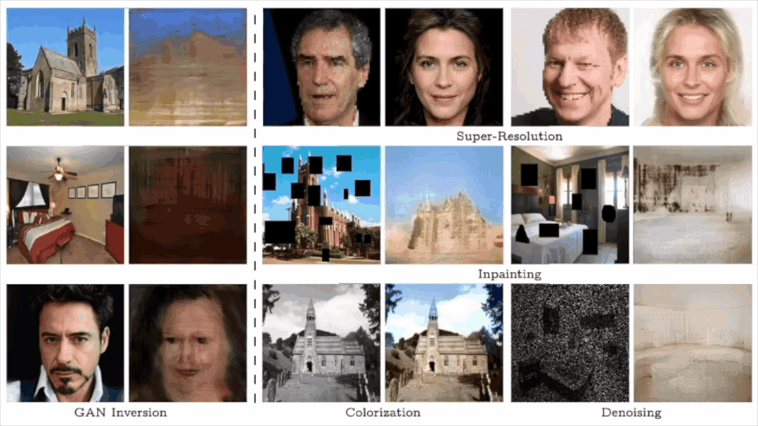

Image Processing Using Multi-Code GAN Prior
1The Chinese University of Hong Kong, Shenzhen
2The Chinese University of Hong Kong
2The Chinese University of Hong Kong
|  |
@inproceedings{gu2020image,
title = {Image Processing Using Multi-Code GAN Prior},
author = {Gu, Jinjin and Shen, Yujun and Zhou, Bolei},
booktitle = {CVPR},
year = {2020}
}


Comment: Interprets the face semantics emerging in the latent space of GANs.